Evaluating PCA, UMAP and t-SNE on MNIST
Source:vignettes/articles/mnist-pca-umap.Rmd
mnist-pca-umap.RmdWhich embedding would you use?
We start with PCA and UMAP fitted to the same 5,000 handwritten digits, then bring in t-SNE for a closer look at the neighbors. Which map you would use depends on what you want to read from it.
- Can I trust the nearest images? UMAP keeps 34% of the 15 closest pixel neighbors on average, compared with 6% for PCA. For one handwritten 7, though, UMAP’s nearest image ranks 3,331st in pixel space. Inspect the two nearest images.
- Does keeping more neighbors help me find the same digit? t-SNE’s nearest image has the right digit for 937 of 1,000 queries, compared with 877 for UMAP. Across the full ranking, UMAP has the higher mean area under the precision-recall curve (PR AUC) for same-digit retrieval. Look at the handwritten 2, 4 and 6 and their neighbors.
- Would an exact search or a larger candidate pool change the answer? UMAP keeps its lead on the exact-search spot check. In UMAP, 0s keep more of their pixel neighbors at small neighborhood sizes, while 7s keep more at larger sizes. Compare the same queries in both candidate pools.
- Can I compare distances between arbitrary images? PCA preserves more sampled triplet orderings (67% versus 62%) and has lower fitted-scale stress in every distance band shown. Compare distance bands or check distance ordering for individual images.
- Are the digits easier to tell apart? On the 1,000-image audit, UMAP has a higher same-digit PR AUC than PCA for all ten digits. UMAP also makes 3s and 5s easier to retrieve than in pixel space, yet angles from 3s to pairs of 5s change more than in the reverse direction. Compare retrieval by digit and inspect the angles in both directions.
- Does a UMAP island hold together in pixel space? The island with the best neighborhood agreement has sampled groups that tend to hold together when we trace them back to the pixels. Start in pixel space, though, and some groups involving those same images disperse in UMAP. Trace the groups in both directions or see which image pairs acquire shared neighbors.
To run the recipes, start with the data and fits below. Later sections reuse those objects.
How were the maps made?
Use quadra from this checkout. The following packages
supply the data, embedding, plotting, and optional audit methods.
# Run once if the packages are missing:
# install.packages("pak")
# pak::pak(c("uwot", "PRROC", "dbscan", "Matrix", "geometry",
# "jlmelville/snedata", "jlmelville/vizier"))
library(quadra)
digits <- snedata::download_mnist(as = "list")
train <- split(
which(digits$meta$split == "training"),
digits$meta$label[digits$meta$split == "training"]
)
set.seed(413)
id <- sort(unlist(lapply(train, sample, size = 500), use.names = FALSE))
x <- digits$data[id, , drop = FALSE] / 255
label <- factor(digits$meta$label[id], levels = 0:9)
names(label) <- id
rm(digits)Fit and plot two embeddings
The 5,000 training images are balanced by digit. Both fits use the
same pixels on a 0–1 scale, with no per-pixel standardization. For UMAP
we use uwot’s implementation of the method of McInnes,
Healy and Melville. UMAP
paper · uwot
pca <- prcomp(x, rank. = 2)$x
set.seed(414)
umap <- uwot::umap(
x,
n_neighbors = 15,
min_dist = 0.1,
n_threads = 1,
n_sgd_threads = 1
)
maps <- list(PCA = pca, UMAP = umap)
digit_colors <- setNames(grDevices::hcl.colors(10, "Set 2"), levels(label))
par(mfrow = c(1, 2), mar = c(1, 1, 3, 1))
for (method in names(maps)) {
xy <- maps[[method]]
vizier::embed_plot(
xy,
colors = unname(digit_colors[as.character(label)]),
title = method,
fixed_aspect = TRUE,
show_axes = FALSE,
cex = 0.5
)
centers <- aggregate(xy, list(digit = label), median)
text(centers[[2]], centers[[3]], centers$digit, font = 2)
}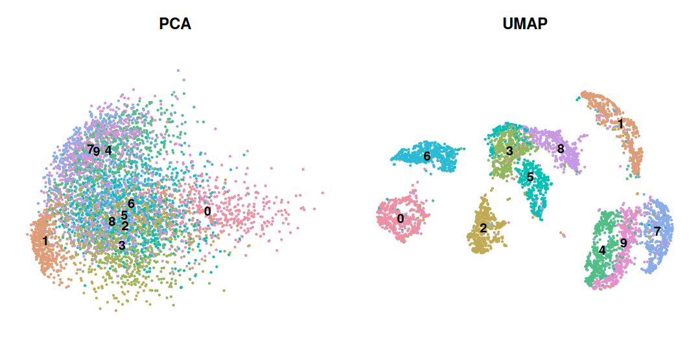
Which map preserves neighbors and distances?
Use all 5,000 images. Reuse the pixel neighbor graph, pair sample, and triplet sample across both embeddings. Look at several neighborhood sizes, including UMAP’s fitting scale of 15. For neighbor overlap we count the fraction retained, as in Chen and Buja. The sampled Spearman comparison draws on drnb. Wang and colleagues use triplet accuracy to evaluate distance ordering in embeddings.
set.seed(415)
pairs <- sample_pairs(nrow(x), 20000)
triplets <- sample_triplets(nrow(x), 5)
k <- c(5, 15, 50)
set.seed(416)
pca_nn <- nn_preservation(x, pca, k = k, n_threads = 1, ret_extra = TRUE)
umap_nn <- nn_preservation(
pca_nn$nn_in,
umap,
k = k,
n_threads = 1,
ret_extra = TRUE
)
scores <- function(y, nn) {
c(
nn$nnp,
pair_spearman = random_pair_distance_correlation(
x,
y,
pairs = pairs,
method = "spearman",
n_threads = 1
),
triplet_accuracy = random_triplet_accuracy(
x,
y,
triplets = triplets,
n_threads = 1
)
)
}
round(rbind(PCA = scores(pca, pca_nn), UMAP = scores(umap, umap_nn)), 3) nnp5 nnp15 nnp50 pair_spearman triplet_accuracy
PCA 0.028 0.056 0.115 0.499 0.671
UMAP 0.257 0.341 0.426 0.342 0.619
par(mfrow = c(1, 2), mar = c(1, 1, 3, 1))
local_scores <- list(PCA = pca_nn$nnpv$nnp15, UMAP = umap_nn$nnpv$nnp15)
for (method in names(maps)) {
vizier::embed_plot(
maps[[method]],
x = local_scores[[method]],
color_scheme = "grDevices::Viridis",
limits = c(0, 1),
title = method,
fixed_aspect = TRUE,
show_axes = FALSE,
cex = 0.6
)
}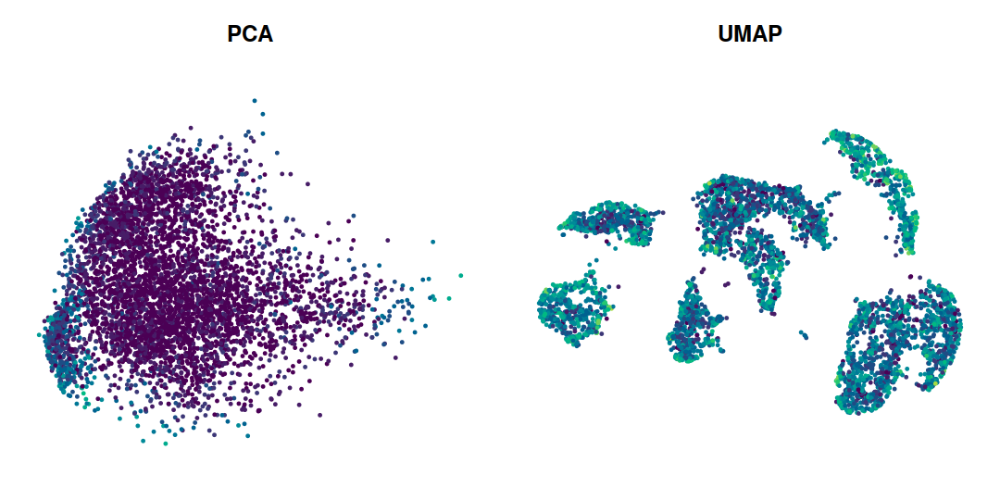
Each point is colored by its fraction of retained neighbors at
k = 15. Both panels use a 0–1 scale from purple to
yellow.
Spot-check the pixel neighbor search
The first calculation used an approximate search in pixel space. Could that explain UMAP’s lead? We can check 100 images of each digit exactly. For now these 1,000 images are just the queries. Each one can still have any of the other 4,999 images as a neighbor. Later we’ll see what happens when we also restrict the candidates to the 1,000-image sample.
For each query, exact_rank_profiles() reports how many
of the 15 neighbors the two spaces share. It also reports RNX, which
adjusts the fraction shared for chance. Lee and colleagues
describe RNX and its weighted
summary.
spot_k <- 15L
spot <- exact_rank_profiles(x, maps, k = spot_k, query_rows = audit)
exact_hits <- vapply(
spot,
function(p) {
p$retained[, 1]
},
integer(length(audit))
)There are two ways to get a list of 15 neighbors from the approximate search. We can ask for 15, or we can ask for 50 and keep the first 15, as we did above. Let’s compare both lists with the exact pixel neighbors, keeping the embedding graphs fixed.
set.seed(416)
narrow <- nn_preservation(
x,
pca_nn$nn_out,
k = spot_k,
n_threads = 1,
ret_extra = TRUE
)
brute <- rnndescent::brute_force_knn_query(
x[audit, , drop = FALSE],
reference = x,
k = spot_k + 1L,
metric = "sqeuclidean",
n_threads = 1
)$idx
exact_ids <- t(vapply(
seq_along(audit),
function(j) {
ids <- brute[j, ]
head(ids[ids != audit[j]], spot_k)
},
numeric(spot_k)
))
prefix <- function(graph) graph$idx[audit, seq_len(spot_k), drop = FALSE]
pixel_ids <- list(
Exact = exact_ids,
Search50 = prefix(pca_nn$nn_in),
Search15 = prefix(narrow$nn_in)
)
map_ids <- list(PCA = prefix(pca_nn$nn_out), UMAP = prefix(umap_nn$nn_out))
shared <- function(graph, ref) {
vapply(
seq_len(nrow(graph)),
function(j) sum(graph[j, ] %in% ref[j, ]),
integer(1)
)
}
summary15 <- lapply(pixel_ids, function(ids) {
hits <- vapply(map_ids, shared, integer(length(audit)), ref = ids)
found <- shared(ids, exact_ids)
c(
pixel_recall = mean(found) / spot_k,
queries_missing = sum(found < spot_k),
colMeans(hits) / spot_k,
changed_PCA = sum(hits[, "PCA"] != exact_hits[, "PCA"]),
changed_UMAP = sum(hits[, "UMAP"] != exact_hits[, "UMAP"])
)
})
round(do.call(rbind, summary15), 4) pixel_recall queries_missing PCA UMAP changed_PCA changed_UMAP
Exact 1.0000 0 0.0573 0.3421 0 0
Search50 1.0000 0 0.0573 0.3421 0 0
Search15 0.9943 63 0.0574 0.3429 4 11Pixel recall counts recovered pixel neighbors. The PCA and UMAP columns give mean overlap with the corresponding embedding. The last two columns count queries whose overlap differs from the exact rank calculation. The 50-neighbor search recovered all 15,000 requested neighbors on these queries. Requesting only 15 missed 86 across 63 queries, but changed the overlap on just four queries for PCA and eleven for UMAP. A missed pixel neighbor affects overlap only if exchanging it for its replacement changes the number shared with the embedding. UMAP’s advantage holds in both searches on this sample.
Do the new neighbors point back?
When a query loses all 15 pixel neighbors, its overlap score is zero. Its replacement neighbors can still differ in how many list the query among their own 15 neighbors. Count the change in reciprocal links on the same full-cohort graphs. The count comparison draws on drnb.
graphs <- list(PCA = pca_nn, UMAP = umap_nn)
reciprocity <- lapply(graphs, function(g) {
r <- mutual_neighbor_correlation(g$nn_in, g$nn_out, k = 15, ret_extra = TRUE)
lost_all <- g$nnpv$nnp15 == 0
change <- (r$mutual_neighbor_out - r$mutual_neighbor_in)[lost_all, 1]
c(
zero_overlap = length(change),
gained_five_or_more = sum(change >= 5),
lost_five_or_more = sum(change <= -5),
min_change = min(change),
max_change = max(change)
)
})
do.call(rbind, reciprocity) zero_overlap gained_five_or_more lost_five_or_more min_change max_change
PCA 2757 1613 21 -8 15
UMAP 100 69 2 -6 15Of the 100 UMAP queries that lose every pixel neighbor, 69 gain at least five reciprocal links. A high reciprocal count can describe a tightly connected set of entirely new neighbors.
Compare short and long distances
Use the same pair sample to ask whether each method preserves short distances better than the dataset-wide score suggests. The input-pair fractions are cumulative. The rank and fitted-scale stress comparisons follow Takaeda’s benchmark. Here we use sampled pairs.
bands <- c(0.05, 0.1, 0.2, 0.5, 1)
profiles <- lapply(maps, function(y) {
random_pair_distance_band_profile(x, y, bands = bands, pairs = pairs)
})
par(mfrow = c(1, 2), mar = c(4, 4, 1, 1))
for (metric in c("spearman", "normalized_stress")) {
title <- if (metric == "spearman") {
"Spearman correlation"
} else {
"Fitted-scale stress"
}
values <- vapply(
profiles,
function(profile) profile[[metric]],
numeric(length(bands))
)
matplot(
bands,
values,
type = "b",
pch = c(16, 17),
lty = 1,
col = c("#1B60A6", "#A33B20"),
xlab = "Input-pair fraction",
ylab = title
)
if (metric == "normalized_stress") {
legend(
"topright",
names(profiles),
col = c("#1B60A6", "#A33B20"),
pch = c(16, 17),
lty = 1,
bty = "n"
)
}
}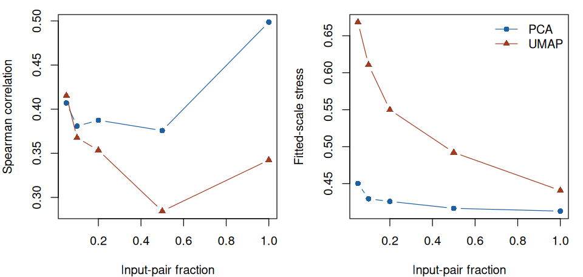
PCA has lower fitted-scale stress at each displayed band. It also has higher full-band Spearman correlation, while UMAP retains more of the actual nearest neighbors.
What changes with the query or the candidate pool?
One dense double distance matrix for 5,000 observations uses about 191 MiB before temporaries. Use 100 observations per digit here, so each matrix uses about 7.6 MiB. All dense diagnostics computed from these matrices describe this subset and its candidate neighbors. Trustworthiness and continuity, introduced by Venna and Kaski, penalize misplaced neighbors by rank.
audit_label <- label[audit]
distance <- function(z) as.matrix(dist(z[audit, , drop = FALSE]))
din <- distance(x)
dout <- lapply(maps, distance)
rank_scores <- t(vapply(
dout,
function(d) {
c(
trustworthiness = trustworthiness(din, d, k = 15),
continuity = continuity(din, d, k = 15),
rnx_auc = rnx_auc(din, d)
)
},
numeric(3)
))
round(rank_scores, 3) trustworthiness continuity rnx_auc
PCA 0.742 0.884 0.173
UMAP 0.942 0.916 0.340We can also treat each image as a retrieval query and ask whether the other images of its digit rank ahead of different digits. Venna and colleagues use this retrieval view to evaluate embeddings. Quadra computes the AUCs with PRROC, using its Davis–Goadrich PR area.
spaces <- c(list(Input = din), dout)
roc <- lapply(spaces, function(d) roc_auc(d, audit_label))
pr <- lapply(spaces, function(d) pr_auc(d, audit_label))
overall <- function(x) vapply(x, function(z) z$av_auc, numeric(1))
round(rbind(ROC = overall(roc), PR = overall(pr)), 3)
par(mfrow = c(1, 2), mar = c(4, 4, 2, 1))
series_colors <- c("#404040", "#1B60A6", "#A33B20")
series_symbols <- c(1, 16, 17)
retrieval <- list("ROC AUC" = roc, "PR AUC" = pr)
for (metric in names(retrieval)) {
by_digit <- vapply(
retrieval[[metric]],
function(z) {
unlist(z$label_av)[levels(label)]
},
numeric(10)
)
matplot(
0:9,
by_digit,
type = "b",
lty = 1,
pch = series_symbols,
col = series_colors,
xaxt = "n",
ylim = c(0, 1),
xlab = "Digit",
ylab = paste("Mean per-query", metric)
)
axis(1, 0:9)
baseline <- if (metric == "ROC AUC") 0.5 else 99 / 999
abline(h = baseline, col = "grey50", lty = 3)
if (metric == "ROC AUC") {
legend(
"bottomright",
colnames(by_digit),
col = series_colors,
pch = series_symbols,
lty = 1,
bty = "n"
)
}
} Input PCA UMAP
ROC 0.759 0.757 0.932
PR 0.431 0.307 0.743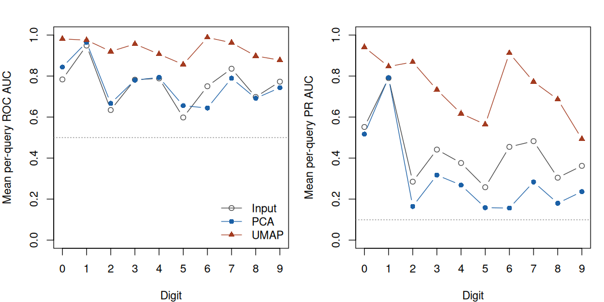
The dotted lines mark random retrieval. Each query has 99 same-label candidates out of 999. A higher PR AUC in the embedding means same-label images become easier to retrieve. Compare that gain with fidelity to the original pixels before interpreting visually separated digits.
Compare neighborhood sizes for each point
At a fixed size, pointwise RNX is overlap adjusted for chance. Use
several sizes to see whether agreement holds as each point’s
neighborhood grows. The AUC averages the complete curve with weight
1 / k for each size.
sizes <- c(1, 3, 5, 10, 15, 25, 50, 100, 150, 250, 400)
umap_rnx <- pointwise_rnx(din, dout$UMAP, k = sizes)
umap_penalties <- pointwise_rank_preservation(din, dout$UMAP, k = 15)
digits_of_interest <- c("0", "7")
digit_curves <- vapply(
digits_of_interest,
function(digit) {
colMeans(umap_rnx$curve[audit_label == digit, , drop = FALSE])
},
numeric(length(sizes))
)
digit_summary <- t(vapply(
digits_of_interest,
function(digit) {
keep <- audit_label == digit
c(
digit_curves[c("rnx15", "rnx100", "rnx250"), digit],
auc = mean(umap_rnx$auc[keep]),
trustworthiness15 = mean(umap_penalties$trustworthiness[keep, 1]),
continuity15 = mean(umap_penalties$continuity[keep, 1])
)
},
numeric(6)
))
round(digit_summary, 3) rnx15 rnx100 rnx250 auc trustworthiness15 continuity15
0 0.541 0.459 0.222 0.369 0.968 0.956
7 0.463 0.517 0.479 0.395 0.959 0.948
colors <- c("#17628A", "#BD542D")
par(mar = c(4.3, 4.3, 1.2, 1.1), las = 1)
matplot(
sizes,
digit_curves,
type = "b",
log = "x",
xaxt = "n",
pch = c(16, 17),
lty = 1,
col = colors,
xlab = "Neighborhood size (log scale)",
ylab = "Mean pointwise RNX"
)
axis(1, at = c(1, 3, 5, 15, 50, 100, 250, 400))
legend(
"topleft",
paste("Digit", digits_of_interest),
col = colors,
pch = c(16, 17),
lty = 1,
bty = "n"
)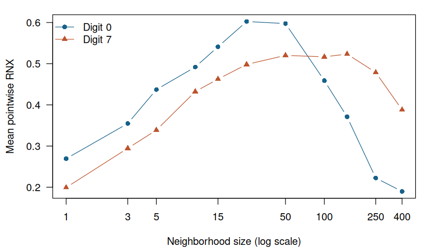
At k = 15, 0s have higher mean overlap, trustworthiness,
and continuity than 7s in this UMAP audit. At k = 100 and
250, 7s have higher mean RNX. The change in ordering
between those sizes also appeared on audit subsets drawn with seeds 418
and 419. Their AUCs were close enough for the ordering to vary across
the three subsets, so the curves show the difference more clearly.
Expand the candidate pool to all 5,000 images
Keep both embeddings fixed and let each query rank all 4,999 other
images. With Euclidean coordinates, exact_rank_profiles()
computes one query’s distances and shares its pixel-space ranks across
both embeddings. Storing the pixel, PCA, and UMAP distance matrices
together would take about 572 MiB before temporaries.
audit_k <- c(15L, 100L, 250L)
scaled_k <- 5L * audit_k
full_ranks <- exact_rank_profiles(
x,
maps,
k = sort(unique(c(audit_k, scaled_k))),
mrre = TRUE
)
rank_summary <- function(rows) {
t(vapply(
full_ranks,
function(p) {
c(
trustworthiness = mean(p$trustworthiness[rows, "k15"]),
continuity = mean(p$continuity[rows, "k15"]),
rnx_auc = mean(p$auc[rows])
)
},
numeric(3)
))
}
scores <- rbind(
rank_scores,
rank_summary(audit),
rank_summary(seq_len(nrow(x)))
)
comparison <- data.frame(
queries = rep(c(1000, 1000, 5000), each = 2),
candidates_per_query = rep(c(999, 4999, 4999), each = 2),
method = rep(names(maps), 3),
round(scores, 3),
row.names = NULL
)
print(comparison, row.names = FALSE) queries candidates_per_query method trustworthiness continuity rnx_auc
1000 999 PCA 0.742 0.884 0.173
1000 999 UMAP 0.942 0.916 0.340
1000 4999 PCA 0.733 0.914 0.145
1000 4999 UMAP 0.959 0.960 0.310
5000 4999 PCA 0.730 0.914 0.144
5000 4999 UMAP 0.958 0.960 0.311Compare the first four rows to isolate the effect of expanding the pool on the same queries. UMAP leads PCA on both rank penalties at 15 neighbors and on RNX AUC in all three comparisons. The absolute scores move. For example, UMAP’s continuity rises from 0.916 to 0.960 for the original audit queries.
For the 0s and 7s, keep the audit queries fixed throughout. Compare their mean UMAP RNX first at the same neighbor count, then at approximately the same fraction of candidates. An audit neighborhood of 100 covers about 10% of 999 candidates. In the full pool it takes 500 neighbors to cover about 10%.
digit_difference <- function(curve, k) {
columns <- paste0("rnx", k)
colMeans(curve[audit_label == "0", columns, drop = FALSE]) -
colMeans(curve[audit_label == "7", columns, drop = FALSE])
}
full_curve <- full_ranks$UMAP$curve[audit, , drop = FALSE]
delta <- cbind(
"Audit pool" = digit_difference(umap_rnx$curve, audit_k),
"Full pool, same count" = digit_difference(full_curve, audit_k),
"Full pool, same fraction (approx.)" = digit_difference(full_curve, scaled_k)
)
colors <- c("#263748", "#A33B20", "#17628A")
symbols <- c(16, 17, 1)
par(mar = c(4.2, 4.5, 0.6, 0.8), las = 1)
matplot(
audit_k,
delta,
type = "n",
xaxt = "n",
xlab = "Neighborhood size in the audit",
ylab = "Mean RNX for 0s minus mean RNX for 7s"
)
axis(1, at = audit_k)
abline(h = 0, col = "grey65")
matlines(audit_k, delta, type = "o", col = colors, lty = 1:3, pch = symbols)
legend(
"bottomleft",
colnames(delta),
col = colors,
lty = 1:3,
pch = symbols,
bty = "n"
)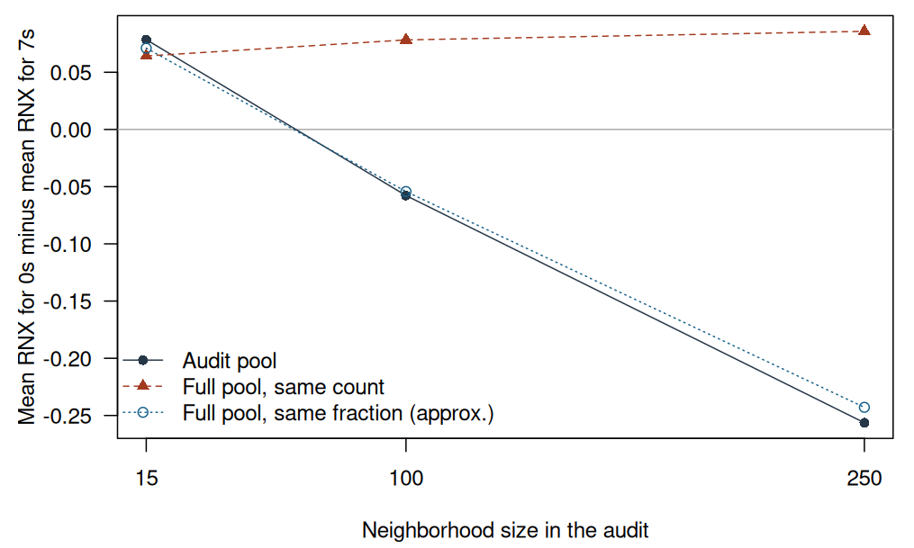
At 100 neighbors, 7s lead 0s by 0.058 in the audit. With the full pool, 0s lead by 0.078 at 100 neighbors and 7s lead by 0.054 at 500. All three audit draws (seeds 417–419) show the same switch at 100 and 250 neighbors. The audit’s broader-scale advantage for 7s carries over when neighborhood size tracks the fraction of candidates. Across all 5,000 queries, the mean RNX difference (0s minus 7s) is +0.083 at 100 neighbors and −0.080 at 500. With the full pool, 7s also lead in mean RNX AUC on each matched query set, by 0.009–0.020.
Inspect the closest neighbors within the first 15
Keeping four of the closest 15 images sounds better than keeping none. Does it mean we can trust the first neighbor? Mean relative rank error (MRRE) gives that first position the most weight. Input MRRE follows the closest pixel neighbors into each map. Output MRRE takes the closest neighbors on the map and looks up their pixel ranks. Lee and Verleysen describe MRRE.
rank_scores15 <- lapply(full_ranks, function(p) {
cbind(
RNX = p$curve[, "rnx15"],
trust = p$trustworthiness[, "k15"],
continuity = p$continuity[, "k15"],
AUC = p$auc,
input_error = p$mrre_input[, "k15"],
output_error = p$mrre_output[, "k15"]
)
})
round(t(vapply(rank_scores15, colMeans, numeric(6))), 3)
delta15 <- rank_scores15$UMAP - rank_scores15$PCA
ahead <- apply(delta15[, 1:4] > 0, 1, all)
c(
ahead = sum(ahead),
higher_input_error = sum(ahead & delta15[, "input_error"] > 0),
higher_output_error = sum(ahead & delta15[, "output_error"] > 0)
) RNX trust continuity AUC input_error output_error
PCA 0.053 0.730 0.914 0.144 0.074 0.271
UMAP 0.339 0.958 0.960 0.311 0.028 0.040
ahead higher_input_error higher_output_error
4012 34 51UMAP leads on average in both directions. Among the 4,012 images where all four earlier scores favor UMAP, 51 have higher output MRRE in UMAP. Inspect the query with the largest increase in output error among those 4,012. The figure shows the query and its nearest neighbor in each space.
Find the nearest images and draw the four digits
i <- which.max(ifelse(ahead, delta15[, "output_error"], -Inf))
neighbor_order <- function(coords) {
candidates <- seq_len(nrow(coords))[-i]
d2 <- rowSums(
sweep(coords[candidates, , drop = FALSE], 2, coords[i, ], "-")^2
)
candidates[order(d2)]
}
neighbors <- lapply(c(list(Pixels = x), maps), neighbor_order)
nearest <- vapply(neighbors, head, integer(1), n = 1)
pixel_rank <- match(nearest, neighbors$Pixels)
rows <- c(i, nearest)
titles <- c("Query", "Nearest in pixels", "Nearest in PCA", "Nearest in UMAP")
captions <- c(paste("Training row", id[i]), paste("Pixel rank", pixel_rank))
par(mfrow = c(1, 4), mar = c(1.8, 0.3, 2.1, 0.3))
for (j in seq_along(rows)) {
snedata::show_mnist_digit(
x,
rows[j],
axes = FALSE,
asp = 1,
xlab = "",
ylab = "",
col = gray.colors(256, start = 1, end = 0),
main = titles[j]
)
mtext(captions[j], side = 1, line = 0.3)
}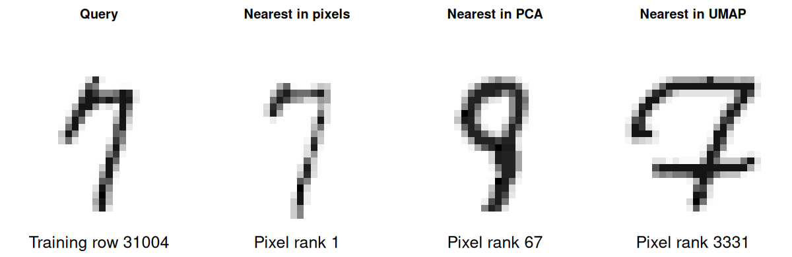
For this 7, UMAP retains four of the 15 closest pixel neighbors and PCA retains none. Yet UMAP assigns first place to a 7 ranked 3,331st by pixel distance. PCA assigns first place to a 9 ranked 67th. That first position carries enough weight to raise UMAP’s output error to 0.212, compared with 0.053 for PCA. The digit labels and the pixel distances answer different questions.
Check distance ordering from each anchor
Use the same 1,000 audit rows and the same 512 sampled comparisons per anchor for both embeddings. For each anchor, ask whether the closer of two sampled observations stays closer. The summary counts input-distance ties as sampled comparisons and excludes them from accuracy.
set.seed(421)
anchor_triplets <- sample_triplets(length(audit), n_triplets = 512)
pca_rnx <- pointwise_rnx(din, dout$PCA)$auc
anchor_results <- lapply(maps, function(y) {
random_triplet_accuracy(
x[audit, , drop = FALSE],
y[audit, , drop = FALSE],
triplets = anchor_triplets,
by_anchor = TRUE,
n_threads = 1
)
})
change_rnx <- umap_rnx$auc - pca_rnx
change_triplets <- anchor_results$UMAP$by_anchor$accuracy -
anchor_results$PCA$by_anchor$accuracy
round(
c(
rnx_auc = mean(change_rnx > 0),
triplet_accuracy = mean(change_triplets > 0)
),
3
) rnx_auc triplet_accuracy
0.894 0.291
par(mar = c(4.4, 4.5, 1.1, 1.1), las = 1)
plot(
change_rnx,
change_triplets,
type = "n",
xlab = "RNX AUC difference (UMAP minus PCA)",
ylab = "Triplet accuracy difference (UMAP minus PCA)"
)
abline(v = 0, h = 0, col = "grey65", lty = 2)
is_one <- audit_label == "1"
points(
change_rnx[!is_one],
change_triplets[!is_one],
pch = 16,
cex = 0.64,
col = "#61768C70"
)
points(
change_rnx[is_one],
change_triplets[is_one],
pch = 17,
cex = 0.78,
col = "#A33B20"
)
legend(
"topright",
c("Other digits", "Digit 1"),
pch = c(16, 17),
col = c("#61768C", "#A33B20"),
bty = "n"
)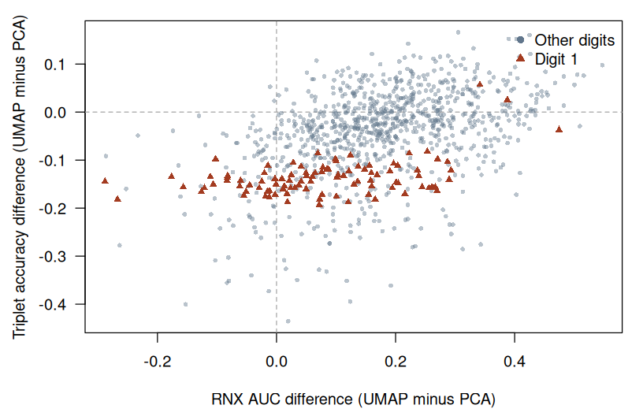
UMAP leads for about 89% of the anchors by RNX AUC and 29% by triplet accuracy. The lower right shows anchors whose neighborhoods agree better under UMAP while their distance ordering favors PCA. Many 1s show this tradeoff. On this audit subset it persists when the triplets are redrawn with seeds 422 and 423. Keeping these anchors fixed and expanding only the RNX candidate pool raises the fraction favoring UMAP by RNX AUC from 89.4% to 95.3%.
Does keeping more neighbors help retrieve the same digit?
PCA gave UMAP an easy lead on neighbor overlap. Let’s give UMAP some stiffer competition. Fit t-SNE to the same pixels, using the first two principal components to initialize the map. Both maps now have recognizable groups of digits. Pick a 4 in either map and there are two things we could ask. Are its neighbors the same images that were close to it in pixel space? And how far down the ranking do we have to go to find the other 4s?
Fit t-SNE to the 5,000 images
Use the pixels, labels, training row IDs and two maps from the data and fits. The pixel search spot check
supplies the 1,000 query indices in audit. This is van der
Maaten and Hinton’s t-SNE with perplexity 30, using the hybrid FFT-tree
option in smallvis. The exact pixel graph from rnndescent 0.3.0 supplies
90 other images per row. The first entry is the image itself. t-SNE
paper · smallvis
# pak::pak(c("jlmelville/smallvis/smallvis", "zufft"))
pixel_graph <- rnndescent::brute_force_knn(x, k = 91, n_threads = 2)
set.seed(435)
tsne <- smallvis::smallvis(
x,
method = list("tsne", repulsion = "hybrid"),
inp_kernel = "nngaussian",
neighbors = pixel_graph,
Y_init = 1e-4 * pca / sd(pca[, 1]),
scale = FALSE,
pca = FALSE,
perplexity = 30,
exaggeration_factor = 12,
stop_lying_iter = 250,
mom_switch_iter = 250,
eta = 200,
max_iter = 1000,
epoch_callback = FALSE,
n_threads = 2,
verbose = FALSE
)
digit_maps <- list(UMAP = umap, `t-SNE` = tsne)At five neighbors, t-SNE has nearly twice UMAP’s chance-adjusted overlap (RNX), 0.485 against 0.253. Widen the neighborhood to 150 and UMAP edges ahead, 0.485 against 0.475. Each point on the curves averages over the same 1,000 query images with all 4,999 other images as candidates.
| Mean over queries | UMAP | t-SNE |
|---|---|---|
| Fraction of the 15 nearest pixel neighbors retained | 0.342 | 0.441 |
| Same-digit PR AUC over the full candidate pool | 0.725 | 0.686 |
Switching smallvis to repulsion = "mutual" gives much
the same answer. The t-SNE overlap is 0.440 and its PR AUC is 0.675.
Compute both scores for each query and draw the maps and curves
exact_rank_profiles() compares the pixel and map
neighborhoods at each size. For label retrieval, score one query at a
time against the other 4,999 images. All 499 other images of the same
digit count as positives. Give pr_auc() the map coordinates
and query indices to get the Davis–Goadrich area for each query. RNX · Davis and Goadrich ·
PRROC
sizes <- c(5, 15, 50, 150)
profiles <- exact_rank_profiles(x, digit_maps, k = sizes, query_rows = audit)
rnx <- vapply(
profiles,
function(p) {
colMeans(p$curve)
},
numeric(4)
)
hits <- vapply(
profiles,
function(p) {
p$retained[, "k15"]
},
integer(length(audit))
)
pr <- vapply(
digit_maps,
function(y) {
pr_auc(
coords = y,
labels = label,
query_rows = audit,
ret_extra = TRUE
)$query_auc
},
numeric(length(audit))
)
round(rbind(overlap = colMeans(hits) / 15, PR = colMeans(pr)), 3)
disagree <- hits[, "t-SNE"] > hits[, "UMAP"] & pr[, "UMAP"] > pr[, "t-SNE"]
sum(disagree)
par(mfrow = c(1, 3), mar = c(1, 0.4, 2.3, 0.4))
colors <- grDevices::hcl.colors(10, "Set 2")[as.integer(label)]
for (name in names(digit_maps)) {
y <- digit_maps[[name]]
vizier::embed_plot(
y,
colors = colors,
title = name,
fixed_aspect = TRUE,
show_axes = FALSE,
cex = 0.45
)
centers <- aggregate(y, list(digit = label), median)
text(centers[[2]], centers[[3]], centers$digit, font = 2)
}
par(mar = c(3.5, 3.5, 2.3, 0.7), mgp = c(2, 0.6, 0))
method_colors <- c("#17638A", "#AD4E25")
matplot(
sizes,
rnx,
log = "x",
xaxt = "n",
type = "o",
pch = c(16, 17),
col = method_colors,
lty = 1:2,
lwd = 2,
xlab = "Neighbors",
ylab = "Mean RNX",
main = "Pixel neighbors retained"
)
axis(1, at = sizes, labels = sizes)
legend(
"bottomright",
names(digit_maps),
col = method_colors,
lty = 1:2,
pch = c(16, 17),
bty = "n"
)The averages go in opposite directions. Does this happen to the same images? Yes, for 414 of the 1,000 queries. Among those 414, take the first 2, the first 4 and the first 6 in training-row order. Each row starts with the query and shows its two closest images in pixels, UMAP and t-SNE. The number under each neighbor is its rank in pixel space, where 1 is closest.
| Query (training row) | Neighbors kept out of 15, UMAP / t-SNE | Same-digit PR AUC, UMAP / t-SNE |
|---|---|---|
| 2 (1540) | 7 / 8 | 0.923 / 0.765 |
| 4 (1764) | 8 / 10 | 0.618 / 0.501 |
| 6 (923) | 7 / 8 | 0.854 / 0.814 |
For the 2, t-SNE finds the two closest pixel neighbors in reverse order. UMAP’s first choice ranks 26th in pixels. Now take the 6. UMAP’s very first neighbor is a 2, while t-SNE finds the same 6 we got from the pixels. Keep looking down the list, though, and UMAP retrieves the other 6s better overall. For the 4, both maps found 4s, but t-SNE kept ten of the original fifteen images and UMAP kept eight.
Select the examples, inspect their scores and draw their neighbors
candidates <- audit[disagree]
examples <- candidates[match(c("2", "4", "6"), label[candidates])]
j <- match(examples, audit)
data.frame(
digit = label[examples],
training_row = id[examples],
hits = hits[j, ],
PR = round(pr[j, ], 3),
row.names = NULL
)
par(mfrow = c(3, 7), mar = c(1.25, 0.05, 1.25, 0.05))
spaces <- c(list(Pixels = x), digit_maps)
for (i in examples) {
others <- seq_len(nrow(x))[-i]
orders <- lapply(spaces, function(y) {
d2 <- rowSums(sweep(y, 2, y[i, ], "-")^2)
others[order(d2[others], others)]
})
near <- unlist(lapply(orders, head, n = 2), use.names = FALSE)
rows <- c(i, near)
titles <- c("Query", paste(rep(names(spaces), each = 2), 1:2))
captions <- c(paste("Row", id[i]), paste("Rank", match(near, orders$Pixels)))
for (j in seq_along(rows)) {
snedata::show_mnist_digit(
x,
rows[j],
axes = FALSE,
asp = 1,
xlab = "",
ylab = "",
col = gray(1 - (0:255) / 255)
)
if (i == examples[1]) {
mtext(titles[j], side = 3, line = 0, font = 2)
}
mtext(captions[j], side = 1, line = 0)
}
}How many of the first few neighbors have the right digit?
Suppose we only look at the five images closest to a query on the map. If four show the same digit as the query, its precision at five is 4/5. Keep the same 4,999 candidates and count the matching digits among the first one, five and fifteen. Each entry below is the mean percentage that match, giving each query equal weight.
| Queries | Map | First 1 | First 5 | First 15 |
|---|---|---|---|---|
| All 1,000 | UMAP | 87.7% | 87.8% | 87.5% |
| All 1,000 | t-SNE | 93.7% | 90.2% | 88.4% |
| Selected 414 | UMAP | 89.4% | 89.7% | 89.5% |
| Selected 414 | t-SNE | 94.0% | 91.5% | 89.0% |
Across all 1,000 queries, t-SNE finds more matching digits on average at each cutoff. Its lead shrinks from six percentage points at the first neighbor to about one at fifteen. UMAP’s higher full-ranking PR AUC tells us which map retrieves the other 499 images of the digit better overall. For someone looking only at the first few images, t-SNE does better here.
The last two rows use the 414 queries where t-SNE retained more pixel neighbors and UMAP had higher PR AUC. Even in this group, the first neighbor has the right digit in t-SNE alone for 30 queries and in UMAP alone for 11. By fifteen neighbors, UMAP has a small lead in mean precision for these selected queries.
Count matching digits at each depth
depth <- c(1L, 5L, 15L)
precision <- lapply(digit_maps, function(y) {
t(vapply(
audit,
function(i) {
d2 <- rowSums(sweep(y, 2, y[i, ], "-")^2)
d2[i] <- Inf
near <- head(order(d2), max(depth))
cumsum(label[near] == label[i])[depth] / depth
},
numeric(length(depth))
))
})
mean_percent <- function(rows) {
scores <- vapply(
precision,
function(p) {
colMeans(p[rows, , drop = FALSE])
},
numeric(length(depth))
)
rownames(scores) <- paste0("k", depth)
round(100 * t(scores), 1)
}
mean_percent(seq_along(audit))
mean_percent(which(disagree))
table(
UMAP = precision$UMAP[disagree, 1],
tSNE = precision[["t-SNE"]][disagree, 1]
)For a case where overlap barely moves while the whole map changes shape, see the two LTSA fits.
How does separation change for a pair of digits?
Recompute ROC and PR AUC with candidates restricted to each pair of digits. Use the same audit rows in all three spaces. Then compare distance consistency, the fraction of observations nearer their own digit centroid than the other digit’s centroid, with half credit for ties. Jeon and colleagues track gains and losses in class-pair consistency. We use the unrescaled fraction from Sips and colleagues.
label_results <- lapply(maps, function(y) {
label_trustworthiness_continuity(
x[audit, , drop = FALSE],
y[audit, , drop = FALSE],
audit_label,
ret_extra = TRUE
)
})
round(t(vapply(label_results, function(result) result$scores, numeric(2))), 3)
input_auc <- class_pair_auc(din, audit_label)
changes <- Map(
function(dm, result) {
output_auc <- class_pair_auc(dm, audit_label)
keys <- c("label_a", "label_b")
stopifnot(
identical(input_auc[keys], output_auc[keys]),
identical(input_auc[keys], result$pairs[keys])
)
pair <- apply(input_auc[keys], 1, function(classes) {
paste(sort(classes), collapse = "/")
})
data.frame(
pair = pair,
ROC = output_auc$roc - input_auc$roc,
PR = output_auc$pr - input_auc$pr,
DSC = result$pairs$change
)
},
dout,
label_results
)
highlight <- c(PCA = "5/9", UMAP = "2/8")
example_changes <- do.call(
rbind,
lapply(names(changes), function(method) {
transform(
subset(changes[[method]], pair == highlight[[method]]),
method = method
)
})
)
print(
example_changes[, c("method", "pair", "ROC", "PR", "DSC")],
digits = 3,
row.names = FALSE
) trustworthiness continuity
PCA 0.874 1.000
UMAP 0.997 0.988
method pair ROC PR DSC
PCA 5/9 0.0715 0.0282 -0.095
UMAP 2/8 0.2263 0.2049 -0.005
xlim <- range(0, unlist(lapply(changes, function(d) d$PR))) + c(-0.03, 0.05)
ylim <- range(0, unlist(lapply(changes, function(d) d$DSC))) + c(-0.02, 0.02)
par(mfrow = c(1, 2), mar = c(4.2, 4.2, 2.2, 0.8), las = 1)
for (method in names(changes)) {
d <- changes[[method]]
plot(
d$PR,
d$DSC,
type = "n",
xlim = xlim,
ylim = ylim,
main = method,
xlab = "Change in pairwise PR AUC",
ylab = "Change in distance consistency"
)
abline(h = 0, v = 0, col = "grey65", lty = 2)
points(d$PR, d$DSC, pch = 16, col = "#506579")
chosen <- d[d$pair == highlight[[method]], ]
points(chosen$PR, chosen$DSC, pch = 17, col = "#A33B20", cex = 1.3)
text(chosen$PR, chosen$DSC, chosen$pair, pos = 4, col = "#A33B20")
}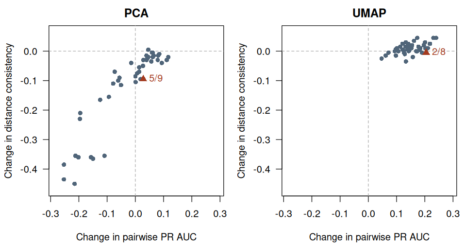
PCA makes 5s and 9s easier to retrieve even as their centroid consistency falls from 0.950 to 0.855. Across three balanced audit subsets (seeds 417–419) of the same embeddings, their PR AUC rose by 0.028–0.044 and consistency fell by 0.080–0.095. UMAP shows a different pattern for 2s and 8s. Their PR AUC rises by about 0.2 in all three subsets, with little room for improvement in the already high input consistency.
Label trustworthiness averages decreases in consistency as penalties. Label continuity penalizes increases relative to the input, including cases where the embedding makes a pair of digits look more separated around their centroids. Use the per-pair changes to inspect what drives each score. Label retrieval guide
Compare angular spread from each digit
Class Angular Distortion Index (CADI) compares the angle from one observation to two observations of another class. For each triplet, it squares the change in cosine and divides by four. Use one sample for both embeddings. Lower values mean better angular preservation. Gunaratne, Kobourov and Miller introduced CADI. Quadra follows the normalization in their code. Their sampler picks classes first. Quadra samples eligible triplets uniformly. These audit classes are balanced, but class sizes can affect the overall score in other data.
set.seed(426)
angle_triplets <- sample_class_triplets(audit_label, n_triplets = 90000)
angular <- lapply(maps, function(y) {
class_angular_distortion_index(
x[audit, , drop = FALSE],
y[audit, , drop = FALSE],
audit_label,
triplets = angle_triplets,
ret_extra = TRUE
)
})
round(vapply(angular, function(result) result$cadi, numeric(1)), 3)
directions <- data.frame(anchor = c("3", "5"), endpoints = c("5", "3"))
pair_scores <- vapply(
angular,
function(result) {
pair <- result$pairs
rows <- match(
paste(directions$anchor, directions$endpoints),
paste(pair$anchor_class, pair$endpoint_class)
)
pair$cadi[rows]
},
numeric(nrow(directions))
)
print(cbind(directions, round(pair_scores, 3)), row.names = FALSE) PCA UMAP
0.05 0.04
anchor endpoints PCA UMAP
3 5 0.075 0.118
5 3 0.056 0.040
angle_change <- lapply(angular, function(result) {
(acos(result$cosine_out) - acos(result$cosine_in)) * 180 / pi
})
anchor <- audit_label[angle_triplets[, 1]]
endpoints <- audit_label[angle_triplets[, 2]]
colors <- c(PCA = "#1B60A6", UMAP = "#A33B20")
xlim <- range(unlist(angle_change, use.names = FALSE))
par(mfrow = c(1, 2), mar = c(4.3, 4.4, 2.3, 0.7), las = 1)
for (i in seq_len(nrow(directions))) {
keep <- anchor == directions$anchor[i] & endpoints == directions$endpoints[i]
cdfs <- lapply(angle_change, function(change) ecdf(change[keep]))
plot(
cdfs$PCA,
col = colors["PCA"],
lwd = 2,
do.points = FALSE,
verticals = TRUE,
xlim = xlim,
ylim = c(0, 1),
main = paste(
"From digit",
directions$anchor[i],
"to digit",
directions$endpoints[i]
),
xlab = "Embedding angle minus input angle (degrees)",
ylab = "Cumulative fraction"
)
lines(
cdfs$UMAP,
col = colors["UMAP"],
lwd = 2,
do.points = FALSE,
verticals = TRUE
)
abline(v = 0, col = "grey55", lty = 2)
if (i == 1) {
legend(
"bottomright",
names(colors),
col = colors,
lty = 1,
lwd = 2,
bty = "n"
)
}
}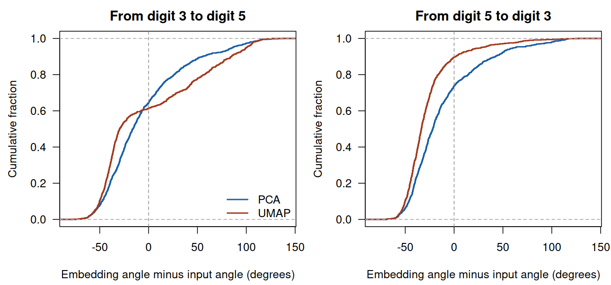
In this audit, UMAP improves PR AUC for 3s and 5s by 0.062 relative to the input, while their nearest-centroid consistency drops by 0.015. Those scores summarize the pair. CADI shows that angles from 3s to pairs of 5s change much more in UMAP than in PCA or in the reverse direction. The figure shows both widening and narrowing from 3s to 5s. From 5s to 3s, UMAP mostly narrows the angles shown here.
Across audit seeds 417–419, 3-to-5 is UMAP’s highest-distortion direction among all 90 directed digit pairs. It scores 0.118–0.132, versus 0.040–0.051 for 5-to-3. UMAP has lower overall CADI than PCA in each audit.
What do UMAP’s gaps and islands represent?
Inspect the gaps between digits
Gap Index colors each empty triangle in the embedding by how much its
share of the total triangle area changes. This comparison uses the same
1,000 audit rows and requires the geometry package. Ros, Arleo and Paulovich
introduced the index and provide a reference
implementation.
gap_results <- lapply(maps, function(y) {
gap_index(
x[audit, , drop = FALSE],
y[audit, , drop = FALSE],
ret_extra = TRUE
)
})
round(vapply(gap_results, function(result) result$gap_index, numeric(1)), 3)
umap_gap <- gap_results$UMAP
largest <- which.max(umap_gap$relative_area_out - umap_gap$relative_area_in)
vertices <- umap_gap$triangles[largest, ]
sort(as.character(audit_label[vertices]))
round(
100 *
c(
input = umap_gap$relative_area_in[largest],
embedding = umap_gap$relative_area_out[largest]
),
2
) PCA UMAP
0.644 0.739
[1] "2" "4" "5"
input embedding
0.09 3.45
xy <- maps$UMAP[audit, , drop = FALSE]
triangle_rows <- c(t(cbind(umap_gap$triangles, NA_integer_)))
colors <- hcl.colors(101, "Blue-Red 3")
fill <- colors[round(50 * (1 + umap_gap$deformation)) + 1L]
par(mfrow = c(1, 2), mar = c(0.6, 0.6, 2.7, 0.6))
vizier::embed_plot(
xy,
x = umap_rnx$auc,
color_scheme = "grDevices::Viridis",
title = "Pointwise RNX AUC",
fixed_aspect = TRUE,
show_axes = FALSE,
cex = 0.65
)
points(
xy[vertices, , drop = FALSE],
pch = 21,
bg = "white",
col = "#20262F",
lwd = 1.5
)
plot(
xy,
type = "n",
asp = 1,
axes = FALSE,
xlab = "",
ylab = "",
main = "Triangle deformation"
)
polygon(xy[triangle_rows, 1], xy[triangle_rows, 2], col = fill, border = NA)
points(xy, pch = 16, cex = 0.28, col = "#20262F90")
polygon(xy[vertices, , drop = FALSE], border = "#FFF2D9", lwd = 2)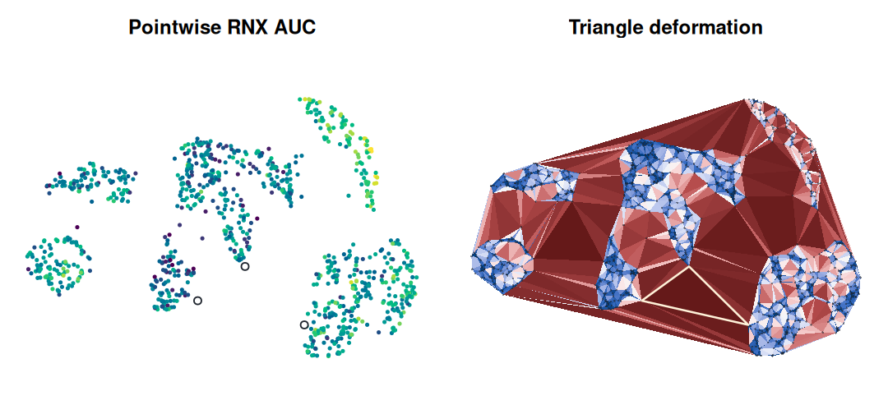
The outlined triangle between 2s, 4s, and 5s grows from about 0.09% of reference triangle area to 3.45% of the area on the UMAP plot. It spans the same digit groups for the other audit seeds, 418 and 419. The pointwise map marks its vertices. The regional map shows how much space opens between them. Red means expansion and blue means compression.
The triangles fill the convex hull. Their areas describe this sampled scatterplot, including its boundary.
Check groups without digit labels
Steadiness grows groups in the embedding and checks them in pixel
space. Cohesiveness grows groups in pixel space and checks them in the
embedding. Both use shared-neighbor similarities. Use the same audit
rows as before. Run the group calculation before looking at the digit
labels. This section requires the dbscan and
Matrix packages. The measures are from Jeon and
colleagues. Quadra follows ZADU 0.5.4 for shared-neighbor
and map weights. The authors also provide their original
implementation.
set.seed(451)
groups <- steadiness_cohesiveness(
x[audit, , drop = FALSE],
xy,
ret_extra = TRUE
)
round(groups$scores, 3)
# Delineate visible islands using only their two embedding coordinates.
islands <- dbscan::hdbscan(xy, minPts = 15)$cluster
members <- split(which(islands > 0), islands[islands > 0])
by_island <- t(vapply(
members,
function(rows) {
incident <- rowSums(matrix(umap_gap$triangles %in% rows, ncol = 3)) > 0
c(
n = length(rows),
RNX = mean(umap_rnx$auc[rows]),
gap = mean(abs(umap_gap$deformation[incident])),
steadiness = mean(groups$pointwise$steadiness[rows]),
cohesiveness = mean(groups$pointwise$cohesiveness[rows])
)
},
numeric(5)
))
island <- members[[which.max(by_island[, "RNX"])]]
round(by_island[order(by_island[, "RNX"], decreasing = TRUE), ], 3) steadiness cohesiveness
0.780 0.723
n RNX gap steadiness cohesiveness
6 106 0.513 0.521 0.995 0.271
1 101 0.373 0.673 0.962 0.799
3 304 0.367 0.655 0.889 0.642
2 102 0.303 0.691 0.993 0.791
5 292 0.288 0.697 0.854 0.588
4 91 0.228 0.737 0.831 0.699The highest-RNX island also has the smallest mean absolute deformation among triangles that touch it. Its high Steadiness is consistent with a coherent visible island. Its low local Cohesiveness flags input-space groups involving those observations that disperse in UMAP. The two directions use different sampled groups. The map values are relative to the other observations in the audit. Repeating the calculation with audit seeds 417–419 and walk seeds 451–453, the highest-RNX island had the lowest mean local Cohesiveness in all nine comparisons.
Keeping these islands and their member rows fixed, the same island
also ranks highest by mean RNX AUC when those rows can choose from the
full candidate pool, in all three audits. On the main audit its mean
changes from 0.513 to 0.455
(mean(full_ranks$UMAP$auc[audit[island]])).
The island contains 100 handwritten 1s and six images of other digits. Keep those same 106 queries. How well can each retrieve its own digit when we expand the ranking from the 999 other audit images to all 4,999 other images? The table gives the median PR AUC for each group.
audit_pr <- pr_auc(
dout$UMAP,
audit_label,
query_rows = island,
ret_extra = TRUE
)$query_auc
full_pr <- pr_auc(
coords = umap,
labels = label,
query_rows = audit[island],
ret_extra = TRUE
)$query_auc
majority <- names(which.max(table(audit_label[island])))
type <- ifelse(
audit_label[island] == majority,
paste("Digit", majority),
"Other digits"
)
cbind(
queries = table(type),
audit_PR = round(tapply(audit_pr, type, median), 3),
full_PR = round(tapply(full_pr, type, median), 3)
) queries audit_PR full_PR
Digit 1 100 0.862 0.816
Other digits 6 0.090 0.092
par(mfrow = c(1, 3), mar = c(0.6, 0.6, 2.4, 0.6))
for (key in c("steadiness", "cohesiveness")) {
vizier::embed_plot(
xy,
x = groups$pointwise[[key]],
color_scheme = "grDevices::Viridis",
limits = c(0, 1),
fixed_aspect = TRUE,
show_axes = FALSE,
title = paste("Local", key),
cex = 0.65
)
hull <- island[chull(xy[island, , drop = FALSE])]
polygon(xy[hull, , drop = FALSE], border = "#263748", lwd = 1.5)
}
vizier::embed_plot(
xy[island, , drop = FALSE],
x = full_pr,
color_scheme = "grDevices::Viridis",
limits = c(0, 1),
fixed_aspect = TRUE,
show_axes = FALSE,
title = "Same-digit PR AUC, full pool"
)
other <- island[audit_label[island] != majority]
points(xy[other, , drop = FALSE], pch = 1, cex = 1.35, lwd = 1.5)Purple indicates low scores and yellow high scores in all three panels. The first two outline the island. The last enlarges it and circles the six queries with labels other than 1. Even with 499 other images of its own digit to retrieve, each of the six scores below every 1 in the island. The highest PR AUC among the six is 0.288 and the lowest among the 1s is 0.430.
Which images acquire shared neighbors?
Compare PCA and UMAP on the same 5,000 pixel-graph rows. Neighbor
Dissimilarity (ND) measures changes in the fraction of neighbors shared
by each pair of images. The score takes the larger of the total
gain and loss, each measured by a Frobenius norm. Compare scores at
fixed graph size and k. Fujiwara et al., equation 3
Their FEALM
code implements the comparison.
round(
vapply(
graphs,
function(g) neighbor_dissimilarity(g$nn_in, g$nn_out, k = 15),
numeric(1)
),
2
) PCA UMAP
169.23 133.45UMAP changes the pattern of shared neighbors less overall. To inspect a particular pair alongside the group diagnostics, return to the 1,000 audit rows. Look for images that went from zero shared neighbors to at least eight, and that never directly listed each other in either space. Select the pair with the largest gain, breaking ties by audit row positions.
audit_graph <- function(d) {
diag(d) <- Inf
list(idx = t(apply(d, 1, function(row) head(order(row), 15))))
}
pixel <- audit_graph(din)
embedded <- audit_graph(dout$UMAP)
changes <- neighbor_dissimilarity(
pixel,
embedded,
k = 15,
ret_extra = TRUE
)$pairs
gains <- subset(changes, shared_in == 0 & shared_out >= 8)
linked <- function(i, j, g) j %in% g$idx[i, ] || i %in% g$idx[j, ]
direct <- mapply(
function(i, j) linked(i, j, pixel) || linked(i, j, embedded),
gains$i,
gains$j
)
indirect <- gains[!direct, ]
pair <- indirect[order(-indirect$shared_out, indirect$i, indirect$j)[1], ]
rows <- c(pair$i, pair$j)
set.seed(451)
reliability15 <- steadiness_cohesiveness(
x[audit, , drop = FALSE],
xy,
k = 15,
ret_extra = TRUE
)
c(
qualifying_pairs = nrow(indirect),
shared_in = pair$shared_in,
shared_out = pair$shared_out
)
data.frame(
training_row = id[audit[rows]],
retained = nbr_pres_knn(pixel$idx, embedded$idx, k = 15)[rows] * 15,
round(reliability15$pointwise[rows, ], 3),
row.names = NULL
)qualifying_pairs shared_in shared_out
69 0 12
training_row retained steadiness cohesiveness
1 24684 3 0.994 0.933
2 57524 2 0.995 1.000Each image keeps only a few of its own pixel neighbors (three and two), yet both have Steadiness above 0.99. Look at the two lists together, though. They had no neighbors in common in pixel space and now share 12 of their 15, even though neither image lists the other. Across the three balanced audit draws (seeds 417–419), 69, 76, and 71 pairs meet the same cutoff without either image directly listing the other.